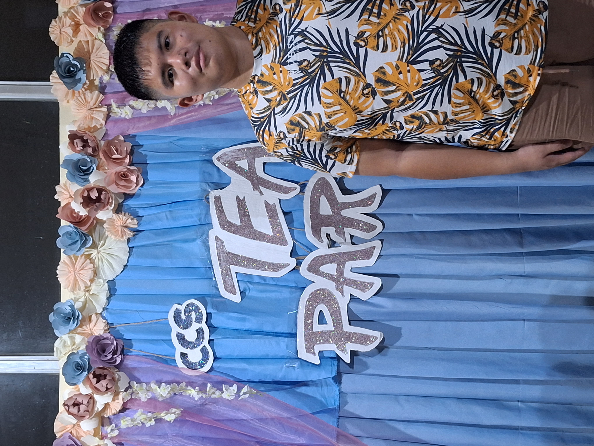
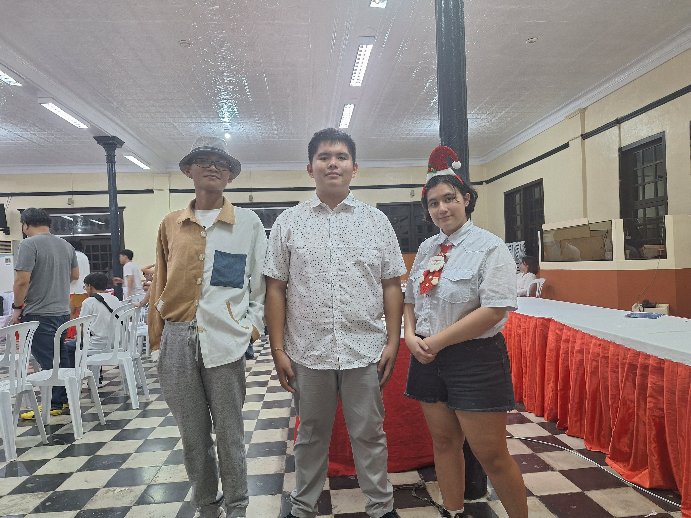
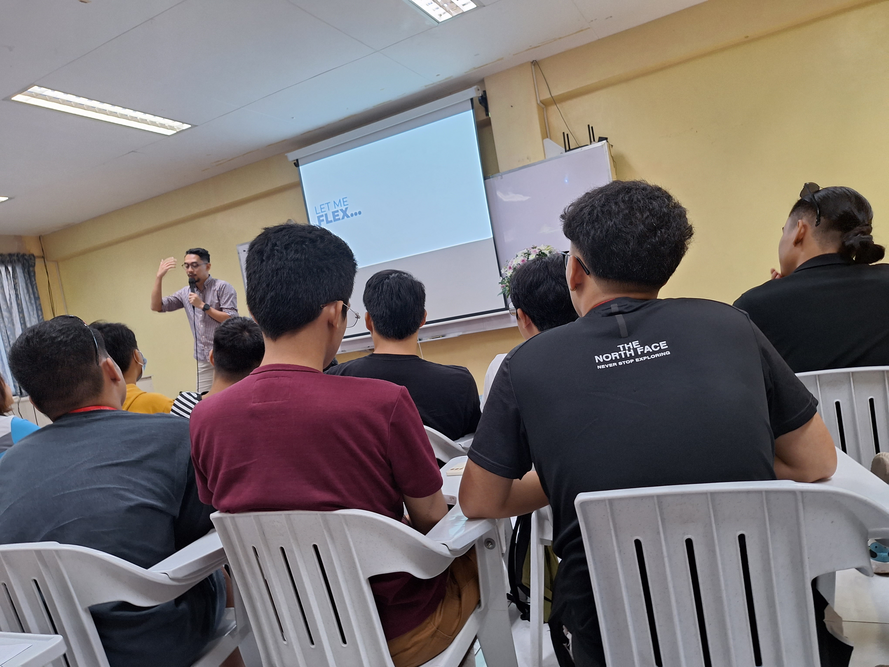
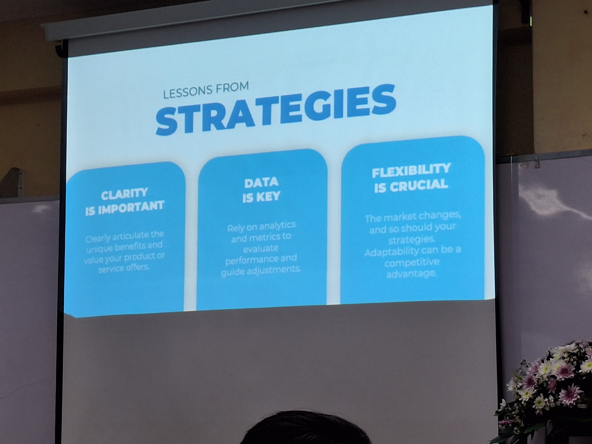
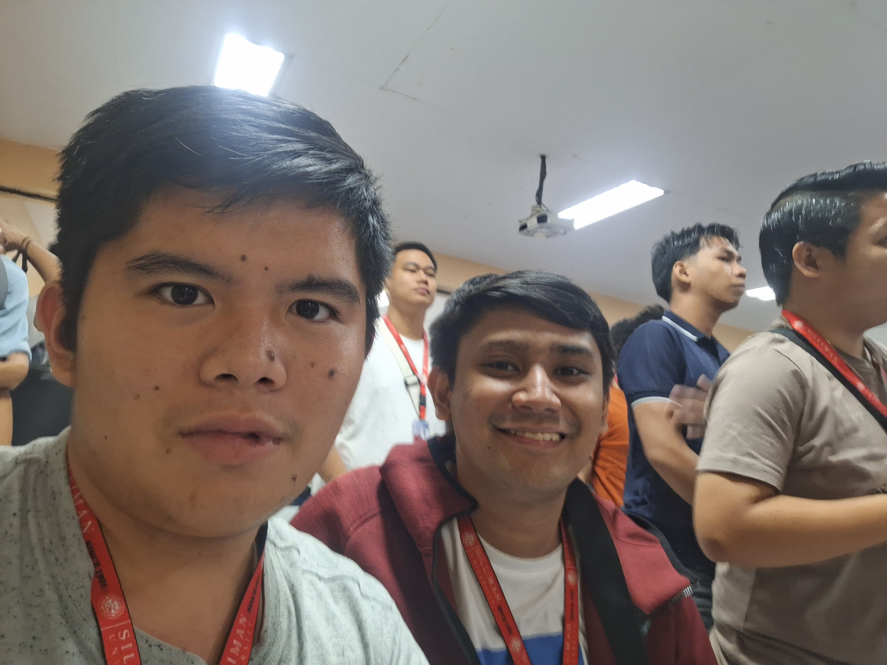
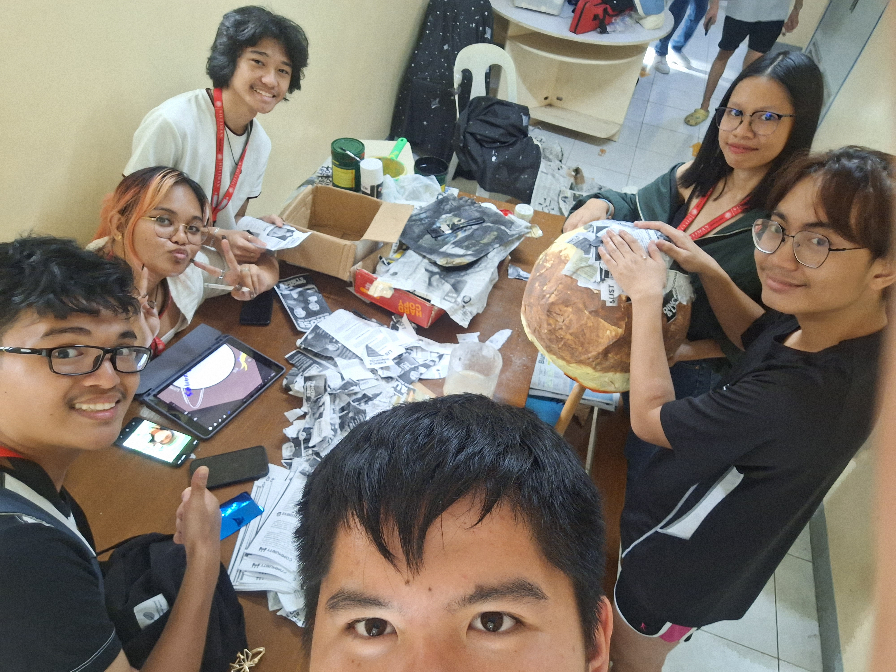
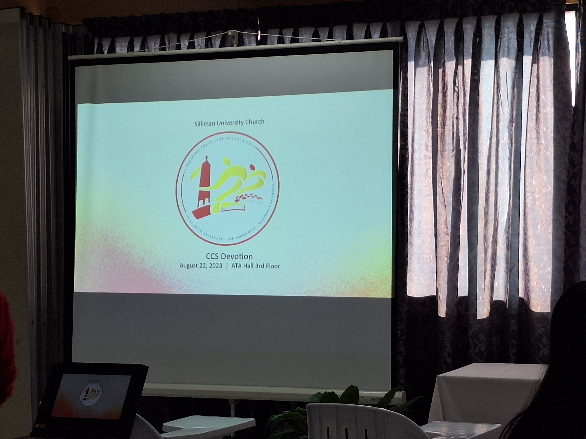

GE10 Project
Community




The World Around Me
With the numerous events going on around the place we live in, numerous reflections come out from the events we participate in these days. We would learn other people's identities while doing something for the betterment of society. Being proud of what we are capable of doing is the best feat humanity could always do as for the sake of making life more enjoyable as it seems.
Culture
The World's Culture
The world has its ways of doing things. And that is why the reflection of culture happens. As a way of celebrating the methodology and reason behind it, it expands and excites the mind of enjoying it. Much better if enjoyed with friends. The best thing is that you can enjoy knowing more of the celebration in hand as you will be delving deep into the festivities of the said culture.
Not only limited to celebrating, but also the methodology of learning and enjoying as well. That is Culture's definition.
Classroom




World's Leaning
The classroom is always a place where one's mind and body can be put of use as a way of enhancing someone's learning capacities. This reflection focuses on how the experiences of the classroom would help one's self in making sure they are ready for the world. From making parade ornaments, to listening to inter-campus orientations, to learning what is good and bad, to calculating the strategies for
living a good life. In the field of Classroom, the learning possibilities are purely endless.
Church

World's Belief
The world always have the beliefs in the lineau of their heritage. It also shapes society as to par se to the cultural history it shares. Religious Church reflection echoes as we went though many services made by the higher up's activities. But not limited to church and devotion, but also enjoying the tales of the savior through the songs of the talented or enjoying a jolly song day with your old church society.
Court
World's Sport
The world of sports is an exciting methodology of keeping one's excitement at peak. In this part of the reflection, Court has been always been fine. Being the spectator of things to being the one handing the sports, the field of sports and sportsmanship is always intriguing to every perosn regardless of the bars that will hold their limitations.